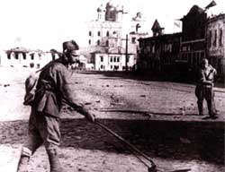

Схема 1 "Группировка противника в Прибалтике"
Схема 2 "Оборонительная рубеж немцев "Пантера""
Схема 3 "Решение командующего 3ПБФ на Псковско-Островскую операцию"
Схема 4 "Рокировка 54А на левое крыло фронта в Псковско-Островской операции"
Схема 5 "Боевый порядки и огни артиллерии 1 ударной и 54 армий артиллерии противника на 17.7.44г
Схема 6 "Тыловая обстановка Псковско-Островской операции 16-31 июня 1944г."
Схема 7 "Мероприятия по оперативной маскировке проводимые войсками 3ПБФ с 5 по 20.6.1944"
Схема 8 "Положение войск левого фланга 3ПБФ с 11 по 16.7.44"
Схема 8А "Положение сторон на 16.7.44г"
Схема 9 "Ход боевых действий войск 3ПБФ в Псковско-Островской операции с 17 по 31.7.44"
Схема 10 "Прорыв обороны противника войсками 3ПБФ на р.Великая 17-18.7.44г"
Схема 11 "Действия войск по овладению г.Остров"
Схема 12 "Боевые действия по овладению г.Псков"
Схема 13 "Боевые действия 14ВА в Псковско-Островской операции"
Схема 14 "Пермещение КП фронта и армий в период с 17 по 31.7.44г"
Псковско-Островкая наступательная операция 17-31 июля 1944г
Схема №174 3Прибалтийский фронт Псковско-Островская наступательная операция
Бои за Псков
|


 Пояснительная записка
Введение
1944г - это время решающих побед Красной Армии в Великой Отечественное Войне, несмотря на то что враг был ещё очень силён, наши бойцы сумели освободить всю территорию СССР и выйти в страны Европы начав и освобождения от неминуемой оккупации одним из этих “кирпичей” на пути Великой победы было освобождение города Пскова в июле 1944г. Гитлеровское командование называло Псков “ключом к парадным дверям Ленинграда”. Попытки освободить Псков в феврале-апреле 1944г успеха не имели, в среднем удалось продвинуться на 18-20 км, это было связано со сложной местностью: много рек и болот, упорно сопротивление оказывали бойцы Вермахта. С октября 1942г по 1944г продолжилось строительство оборонительной линии “Пантера”, значительная часть этого укрепления и проходили по Псковской равнине. Это было очень серьёзный оборонительный рубеж.
Оперативная обстановка. Силы сторон перед операцией.
Район боевых действий -это Псковская область у Восточной границы Эстонии и Литовская ССР и выступ территории Ленинградской области. Это холмистая местность, местами сильно заболочено, много рек и озёр, лес расположен неоднородно местами, много шоссейных и грунтовых дорог, не смотря на то, что рубеж Пантера не был окончательно достроен гитлеровцами. К началу 1944г он представлял собой достаточно развитую систему обороны около 170 км в длину и от 4 до 6 км в ширину. Это система опорных пунктов, соединённых между собой траншеями и ходили сообщения. Города Псков и Остров прикрывались специальными позиции имелось много дотов и дзотов масса противотанковых препятствий. В целом хорошо продумана маскировка. Прорыв такого мощного рубежа требовал особой подготовки.
Силы сторон
Оценка противника
Общая группировка противника в Прибалтике на 15.7.44 г.
В Прибалтике действовала СГА (штаб Рига) в составе АГ “Нарва”, 16 из 16 армии.
Северной группой армии командовал генерал-полковник Линдеман, который впоследствии был заменён генерал-полковником Шернером.
Армейской группой “Нарва” (штаб Реквере) командовал генерал Физнер, впоследствии сменённый генералом пехоты Грассер.
18А (штаб Валга) командовал генерал пехоты Лох.
16А (штаб Паневежис) командовал генерал артиллерии Ганезен.
Всего в Прибалтике действовало 38 дивизий (см таблицу №1)

К середине июля советским войскам противостояли к 16.7.44 перед 3-м прибалтийским фронтом действовали 18А и часть сил 16А противника в составе 28АК (12апд, 21пд, 126пд, 207охр. дин), 38АК(30пд, 121пд, 32пд, 21апд) и 50АК(83, 218 и 69пд).
Перед 42А. На участке Варнья, Кожино на фронте , протяжением 146 км (из них 110 км по побережью оз.Псковское) оборонялись части эст.пд неустановленной нумерации. 207 охр.див, 12апд, 126пд. Всего четыре пд. Наибольшая плотность - один батальон на 3 км на участке Молгово, Кожино.
Перед 67А. На участке (иск) Кожино, Зубова гора на фронте 66 км оборонялись 21пд с 540 штраф.батальоном, 30пд с 480 зап.батальоном, 121пд с 1 и 2 штраф.батальонами, 32пд. Всего четыре пд со средней плотностью один батальон на 2 км фронта.
Перед 1 Уд.А. На участке (иск) Зубова гора, (иск) Суки на фронте 42 км оборонялись 21апд. 83 пд. Имея среднюю плотность один батальон на 2,6 км фронта.
Перед 54А. На участке Суки, (иск) Брюшково на фронте 36 км оборонялась 218пд, усиленная 3 велоохранным полком. Средняя плотность на этом участке составляла: 1 батальон на 3,3 км фронта.
Таким образом, наибольшая плотность группировки противника была на центральном участке фронта. Это обстоятельство объяснялось стремлением противника наиболее надёжно прикрыть Островское направление. Средняя плотность живой силы, в среднем не превышает уставных норм в жестокой обороне (2-2,5 км фронта на 1 батальон).
Резервы. В Районе Псков - до полка 12апд и два батальона 126пд; в районе Остров - до полка 32пд и юго-зап. Пушкинские горы - 69пд.
Наличие незначительных резервов свидетельствует о том, что немцы не располагали достаточными силами, которые можно было бы выделить в оперативный резерв.
В связи с этим характерно отметить, что противник стремился этот пробел (отсутствие оперативных резервов) восполнить широким манёвром сил, находящихся в первой линии.
Так, например, удар Красной Армии по центральной группировке немцев в конце июня 1944г. вынудил их немедленно, буквально на другой день операции выкраивать часть сил на неатакованных участках фронта, за счёт расширения участков, остающихся дивизий и ввод в бой различных спец.частей и подразделений.
Таким образом, в конце июня и в начале июля из состава группировки, действующей перед 3 Прибалтийским фронтом, немцы перебросили в район Двинск части 212, 215 и 122пд. Позднее (во второй половине июля) туда же переброшена и 126пд.
Артиллерия. Общее количество действовавших перед фронтом артдивизионов к моменту перехода наших войск в наступление составляло 38 дивизионов ДА и 5 дивизионов артиллерии РТК, позиционные районы которых были засечены.
Танки. Всего перед фронтом отмечалось до 125 единиц танков и самоходных орудий, которые принадлежали 184 бригаде штурмовых орудий и 502 тяжёлому танковому батальону. В это число входят также самоходные установки, находящиеся в составе противотанковых дивизионов пехотных дивизий.
Авиация. Перед фронтом отмечено всего к 17.7 225 самолётов противника, из них - 50 бомбардировщиков, 105 истребителей, 40 разведчиков дальнего действия и 30 самолётов войсковых разведчиков. ВВС противника базировались на аэродромах.
Немецкое командование, стремясь сковать наши силы в Прибалтике, прикрыть подступы к восточной Пруссии и удержать Финляндию от выхода из войны решило во что бы то ни стало удерживать Прибалтику.
[1, стр.15-18]
Со стороны Советской Армии операцию осуществлял 3-й Прибалтийский фронт, под командованием И.И.Масленникова.
Состав фронта:
42-я Армия. Командующий генерал-лейтенант В.П. Свиридов.
67-я Армия. Командующий генерал-лейтенант В.З.Романовский.
54-я Армия. Командующий генерал-лейтенант С.В.Рогинский.
1-я Ударная Армия. Командующий генерал-лейтенант Н.Д. Захватаев.
15-я воздушная Армия. Командующий генерал-лейтенант авиации Н.Ф. Науменко.
В итоге всех мероприятий, проведенных в подготовительный период, войска фронта на направлении главного удара 16.7.44 закончили подготовку и были готовы к выполнению задач, поставленной директивой Ставки Верховного Главнокомандующего от 6.7.44 №220135 по прорыву сильно укрепленной оборонительной полосы противника со Стрежевского плацдарма.
На направлениях Псков и Остров (вспомогательной направление фронта) войска 42 и 67 армий так же закончили подготовку и были готовы к активным действиям в зависимости от развития успеха на главном направлении.
Войска фронта 16.7.44 были сосредоточены в следующей группировке:
а) в направлении главного удара (1 Уд. и 54А) 1 эшелон (дивизии 1Уд. и 54А) - пятнадцать стрелковых дивизий со всеми средствами усиления фронта, в том числе вся авиация 14 Воздушной армии.
б) вспомогательной направление (42 и 67А) - семь стрелковых дивизий и один УР.
Таким образом, из двадцати пяти дивизий, коими располагал фронт, на направление главного удара было представлено на схеме №3.
Соотношение сил на 16.7.44 - см. таблицу ниже сего.

[2, стр.54-56]
Ход боевых действий
Операция проводилась в два этапа.
1 этап (17-23.7.44) - прорыв 1 УА и 54А обороны противника со Стрежневского плацдарма и выход войск левого крыла фронта на рубеж Грибули, р.Ворожа, Вилака, Балтинава.
(Карта 100.000. Схема №9).
Началу активных действий войск фронта предшествовали активные действия войск 2-го прибалтийского фронта (сосед слева), перешедшего в наступление 9.7.44 Южные и юго-восточные Новоржев. Успешные действия войск 2-го прибалтийского фронта состоит угроза левого фланга и группировки войск противника перед 3ПБФ, обороной на Восточном берегу р.Великая, на выступлениях в район сев.вост. Пушкинские Горы, это угроза вынудила противника к честному отходу с целью выравнивания своей оборонительной линии по рубежу р.Великая.
321сд в ночь на 11.7.44, действуя усиленными отрядом в районах Федорыгино, Телякова, Арапово (схема 8), овладела указанными населенными пунктами и, установив, что противник частями 218пд началась частичная отход в западном и юго-западным направлениях, с 5.00 11.7.44 перешла в наступление на всём фронте. Сбивая группы прикрытия противника, преодолевая минирование участки дорог, дефиле и завалы, дивизия к исходу 12.7.44 с боями освободив 75 населённых пунктов, в том числе районный центр Пушкинские Горы вышла и полностью очистила от противника восточный берег р.Великая на участке Селиханово, Печеханва..в последующие дни дивизия продолжала действовать в сильными отрядами И с боями к 16.7.44 вышла на Восточный берег р.Великая на участке (иск) Печехнова, Левины, Семендяиха, захватив плацдарм на западном берегу р.Великая в районе Юнкино.
В течение 11-16.7.44 войска фронта севернее Пушкинские горы, оставаясь на занимаемых рубежах, уничтожала огнём живую силу и технику противника и в полосах всех армии вели разведку. Войска 1 Уд. и 54 армии к утру 16.7.44 за исходное положение:
Первая Ударная армия -
14 Гв.ск - 146сд, прикрывая правый фланг армии занимала оборону на широком фронте на рубеже: Каморы Шубина гора, Сигарино, Станки Подборная.
23 Гв.сд - на участке сев.вост. окраина Нов.Путь, Алуферово.
33сд - на рубеже 1,5 км зап.Алуферово, отд.дома (500 м. сеы.вост.Белякова).
12 Гв.ск - 52 Гв.сд - на рубеже шоссе (1 км сев.вост.Белякова), Стрежнево.
54 армия -
7ск - 53 Гв.сд - на рубеже (иск) Стрежнево, Забодаева.
245сд (второй эшелон) в районе Гнилуха, Устье.
239сд (третий эшелон) в районе Балыши, Плтф. №8, Бышдино.
111ск - 321сд оборонялась на широком фронте на рубеже Селиханово, Юнкино, Печехнова, Семендяиха.
225сд (второй эшелон) в районе Рахово.
123ск (364, 56, 285сд) сосредоточен в районе Подосье, Гурова, Тучи.
На вспомагательном направление: озеро Псковское, (иск) Каморы к утро 16.7.44 продолжали обороняться на рубеже:
42 армия -
14 Ур - по восточному берегу Озеро Псковское на участке: Заходы, Жидилов Бор.
118ск. 376сд - (иск) Жидилов Бор, Хвойник, Топорищево, (иск) Мал.Фомкино.
128сд - Мал.Фомкино, Саева, (иск) Холстово.
67армия -
116ск. 291сд - Горшкова, Оленино, Воронино.
198сд - (иск) Боронино, Лобаны.
119ск. 86сд - Еваново, Зуево.
326сд - Жарчиха, Тараканово 2-е.
44сд - Белова, Овечкино, (иск) Каморы.
16 июля 1944 года.
(схема №10).
42 армия - пятью разведротами вела боевую разведку в направлениях: Дулетова, Гора, Черняковицы, вдоль шоссе Луга-Псков Горнево. Разведроты были встречены сильными огнем противника из всех видов оружия в районе Черняковицы контратакой противника силы до роты. Разведроты после короткого напряжённого боя, установив систему обороны и огня противника в этих районах, были отведены в исходное положение.
[3, стр. - 56-74]
Псков непосредственно освободила 42 армия.
Действия войск 42 армии с 16 по 23 июля.
(схема №12).br
Войска 42 армии (367сд, 14 УР, 128сд) с 17 до 31.7 продолжали оборону ранее занимаемых рубежей. На ряде участков вели разведку боем силою взвод-рота, проводили поиски разведывательными группами и огнем всех видов оружия воздействовали на противостоящего противника. В указанный период (17-4.7) противник прочно удерживал главную полосу обороны, отражая нашу разведку и производили массовое разрушение г. Псков. Одновременно противник сжигал окрестные населенные пункты.
Боевые действия 42A за овладение г. Псков начались в ночь на 22,7,44.
Разведгруппы 376 и 128сд, действовавшие в ночь на 22.7.44 в 3.40, преодолев сопротивление групп прикрытия противника, вор- вались в его передовые траншеи.
Для развития успеха разведгрупп 37 6сд командиром дивизии немедленно были введены в бой 1250 и 1252cп, которые уже к 7.00 овладели Гора, Хрястолово, Черняковицы.
Разведотряд 128сд, действовавший в направлении Клишово, ворвался в траншеи противника и, уничтожая группы прикрытия противника, в 4.00 вел бой за Клишово, Лажневл. Для развития успеха разведотряда в 5.00 были введены в бой 374 и 533сп 128сд, которые в первой половине дня овладели Горнево, Бердово.
Развивая успех, войска армии перешли в наступление по всему фронту и, преодолевая сопротивление противника, кисходу дня вошли на восточный берег р.Великая, овладев восточной и центральной частью города Псков, а также освободили более 50 населенных пунктов.
В течение ночи на 23.7.44 войска армии продолжали наступление.
376сд в 4.00 23.7 форсировала р.Великая в районе Писковичи и на участке Коковичино, Алмазово. Сломив сопротивление против- ника на западном берегу р.Великая и, форсировав р.Каменка, части дивизии с боями продолжали продвижение в западном направлении.
128сд на рассвете 23.7 успешно форсировала р.Великая. В районе 1 км севернее железнодорожного моста г.Псков и, сломив упорное сопротивление противника на западном берегу р.Великая, при содействии 291сд 67A, форсировавшей в ночь на 23.7 р.Великая в районе Выдра Лапина, в 6.00 23.7 полностью очистила от противника город Псков и его западные окрестности. Преодолевая сопротивление противника, войска 42A продолжали продвижение в западном направлении. Наиболее упорное сопротивление противника встречали части, наступающие вдоль шоссе Псков-Рига.
Артиллерия стр.дивизий и армейская артиллерия с восточного берега р.Великая поддерживала наступающие части в боях по расширению плацдарма на западном берегу р.Великая. Полковая артиллерия, переправившись на паромах через р.Великая, находилась в боевых порядках пехоты.
В итоге двухдневных боев войска армии форсировали крупную водную преграду р.Великая, овладели городом и железнодорожным узлом Псков мощным опорным пунктом немцев; одновременно войска 42A освободили до 200 населенных пунктов. К концу второго дня боевых действий войска 4 армии вышли на рубеж: Поддубье, Тупы, Панева, Станки, Никольщина.
За отличные боевые действия войскам, участвовавшим в боях за освобождение Псков, в приказе Верховного Главнокомандующего от 23 июля 1944 г. объявлена благодарность.
[4, Великая Отечественная война без грифа секретности. Книга потерь. Новейшее справочное издание/Г. Ф. Кривошеев, В. М. Андроников, П. Д. Буриков, В. В. Гуркин.- М.: Вече, 2010-384с]
Мемуары.
Конкретно Псков освобождала 42-я Армия. Действия ее подразделений лучше всего описано в книге Н.М.Иванова «Невозвратимое. Записки старого псковича».
По замыслу советского командования, 42-я армия наносила удар по противнику на востоке в направлении пунктов Гора, Черняковицы, Клишево. 128-я стрелковая дивизия генерал-майора Д.А. Лукьянова, очистив от врага юго-восточную часть Пскова, должна была форсировать Великую и захватить плацдарм на Завеличье.
Вспомогательный удар планировалось нанести на севере укрепленного района противника, в обход неприступных Ваулинских высот, в направлении Хотица, Верхние Галковичи, Овсище.
376-й дивизии генерал-майора Н.А.Полякова предстояло овладеть Запсковьем, выйти на Великую севернее Кремля, форсировать реку и захватить плацдарм на западном ее берегу.
128-я стрелковая дивизия находилась на фронте с первого дня Великой Отечественной войны. «Двадцать второго июня, ровно в четыре часа» она грудью встретила первый удар немецко-фашистских войск в Литве, на государственной границе. В ее истории были трудные дни отступления на восток под натиском превосходящих сил противника, активное участие в обороне Ленинграда и прорыве блокадного кольца, Ленинградско-Новгородская наступательная операция.
Дивизия находилась в ряду наиболее закаленных, испытанных в жестоких боях соединений Советской Армии. Полками, батальонами, ротами командовали в ней храбрые и умелые офицеры.
128-я дивизия развернула свой боевой порядок восемью километрами восточнее Пскова. Первый его эшелон составляли правофланговый 533-й стрелковой полк (напротив деревень Лажнево и Клишево) и левофланговый 374-й стрелковый полк (напротив вень Горнево и Бердо во). 41-й полк (без первого батальона, выведенного резерв командира дивизии) находился во втором эшелоне.
Тревожную ночь с 21 на 22 июля 1944 года командиры провели на своих командно- наблюдательных пунктах. На нейтральной полосе бесшумно работали саперы. В расположение противника направлены разведывательные группы.
Бойцы готовились к важной военной операции. Вспоминает бывший командир 374-го полка 128-й стрелковой дивизии К.А.Шестак: «Мы знали, что нам предстоите ходу, в короткие сроки, исчисляемые 2-3 часами, а на первом этапе минутами, форсировать реку Великую, поэтому по карте и по донесениям разведки в деталях изучали возможные места переправы, тыловые рубежи противника, резервы подручных средств. Мы не рассчитывали на табельные переправочные средства, поэтому с самого начала ориентировались на русскую смекалку и находчивость: учились быстро и надежно строить плоты, используя бочки, ящики, двери, оконные и дверные коробки, ворота, телефонные столбы.. Учебные атаки следовали одна за другой, согласно мудрой солдатской заповеди: «Больше пота - меньше крови».
Немецкое командование требовало от своих подчиненных взрывать и сжигать всё. За две недели с 8 по 22 июля 1944 года была уничтожена сохранившаяся до той поры половина города: взорваны мосты, разрушена электростанция, промышленные здания, исторические памятники, обращена в руины центральная часть города. Один из немецких офицеров при этом сказал : «Пскова больше нет и никогда не будет».
В советских частях всё было готово для нанесения решающего удара по врагу: сосредоточены на исходных позициях войска, пристреляны по целям орудия и минометы, саперы расширяют проходы в минных полях, «под пробку» заправлены горючим танки, самоходные орудия, самолеты. Поступит приказ командования, и вся эта могучая сила устремится вперед, к Победе!
В три утра 22 июля с передовой звонят на участке Лажнево немцы ушли из первых траншей. Командир 533-го полка подполковник Панин передал приказ штурмовой групе: немедленно занять свободные траншеи и продвигаться дальше, навязывая бой противнику.
Начался бой с арьергардами противника за деревни Лажнево и Клишово. Особенно мешал так называемый «клишовский дот», из которого немцы вели фланговый пулеметный огонь. Отважные разведчики Василий Жуков и Роман Шалобода подползли к доту поближе и, забросав его гранатами, заставили фашистских пулеметчиков замолчать. Однако, 533-й полк, захватив Лажнево и Клишево, затем встретил упорное сопротивление врага и его продвижение вперед временно замедлилось.
Одновременно на сближение с противником двинулся соседний справа от 533-го полка - 374-й стрелковый полк. Вспоминает бывший пулеметчик А.Рожалин: «Окопами переднего края на нейтральную полосу быстро прошли, пригнувшись, саперы - снимать на проходах мины. Начали подтягиваться на исходный рубеж бойцы стрелковой роты. Все напряжены.
Громом ударила наша артиллерия, перенеся огонь с первой линии обороны врага дальше, в глубину ее. Вот долгожданная сигнальная ракета. Следом за разведчиками мы гуськом, один за другим, шагнули в заросли болота Из вражеских окопов застрочили автоматы, взметнулись в небо ракеты. Преодолевая последние метры топи, перепрыгивая с кочки на кочку, наконец-то достигаем твердого грунта».
Артиллерийская подготовка была короткой, мощной, ошеломляющей. Свое веское слово сказали гвардейские минометы - прославленные «катюши».
Рассказывает бывший командир 374-го стрелкового полка полковник запаса К.А.Шестак: «Наш полк начал наступление 22 июля в 4 часа утра. Горизонт медленно прояснялся. С болота, которое лежало перед высотой Бердово, тянулся вверх сизый шлейф густого тумана. Как он был, кстати, этот туман! Он помог полку скрытно выйти к минным полям и проволочным заграждениям противника. Саперы обезвредили за день боя около тысячи мин и фугасов, подорвали несколько огневых точек врага, проделали 12 проходов в минных полях и заграждениях. Они открыли путь и дали сигнал к началу артподготовки... Противника застигли врасплох. Он даже не успел занять огневые позиции и усилить линию обороны».
Поднявшись на высоту Бердово, 374-й полк разорвал систему обороны гитлеровцев, атакуя с фланга, сравнительно легко овладел населенным пунктом Горнево.
Развивая наступление, полк атаковал станцию Березка. Первый батальон под командованием капитана Н.Коротаева в 6 часов утра подошел к Крестам. Предполагалось, что он нанесет по врагу только вспомогательный удар, так как перед полком простирался болотистый участок фронта, исключавший поддержку танков. Однако, используя внезапность, поддержанный мощным огнем артиллерии и атаками соседей, полк развил очень успешное наступление.
В районе Крестов 374-й полк встретил сильное сопротивление врага. Под губительным огнем пехота залегла. С левого фланга противник уже готовил контратаку с танками, держась за Кресты, как промежуточный рубеж обороны.
Кроме того, в этом районе размещался лагерь военнопленных. Фашисты не успели всех ликвидировать. Решительные действия наших войск помешали гитлеровцам учинить расправу. Артиллеристы в единоборстве с танками противника расчистили путь пехоте.
374-й полк, продолжая наступление, первым завязал бои непосредственно за Псков. Несмотря на то, что оба его фланга, ввиду отставания соседей, оказались открытыми, батальоны углубились в окраинные улицы города, выбивая немецких автоматчиков из домов и развалин.
Командование 128-й дивизии, поддержав наступательный порыв 374-го полка, приняло меры по обеспечению его флангов. С этой целью в распоряжение командира полка был передан 1-й батальон 741-го стрелкового полка, находившийся в резерве. Командир батальона капитан И.И. Баранов немедленно развернул свои подразделения на правом фланге 374-го полка и повел их в наступление.
В 6.30 22 июля прорвал оборону противника и перешел в наступление 1252-й стрелковый полк, а через 15 минут после него перешел в наступление и 1248-й полк, занимавший позиции восточнее Псковского озера.
Ровно в полдень 1250-й стрелковый полк под командованием А.И Глушкова завязал бой на северной окраине Пскова. И первыми, кто переступил здесь городскую черту, были бойцы разведвзвода лейтенанта Борисова. Батальоны устремились к реке Великой, сметая со своего пути оказывающие сопротивление группы фашистов.
Одну из стрелковых рот вел лейтенант Мурашев. Четыре миномета и шесть пулеметов - первые боевые трофеи бойцов его роты. Во главе ротной разведки шел командир отделения Трофимов. Вызвав на себя огонь, он выявил расположение огневых точек противника и завязал бой с целью прорыва к Великой. По рации командир 1250-го полка подполковник А.И.Глушков доложил командиру дивизии о том, что его батальоны вышли на берег Великой севернее устья Псковы и готовят подручные средства для переправы на западный берег.
374-й полк, миновав Крестовское шоссе, задержался возле железнодорожного переезда. «Из развалин завода «Выдвиженец», - вспоминает И.Марков, бывший сержант армейской роты связи, - застрочили пулеметы. Бойцы залегли. Попробовали пойти в обход, но и слева из разрушенного здания вокзала нас встретили огнем. Тогда батальон поднялся в атаку. Грянуло дружное «Ура!»... Захлебнулись вражеские пулеметы, побежали гитлеровцы. И вот я уже на территории завода «Выдвиженец», в первом, пусть разрушенном, но зато освобожденном здании родного города. А соседний батальон выбивал в то время гитлеровцев из здания вокзала».
Очищали железнодорожный вокзал и пристанционные здания от гитлеровцев подразделения 741-го стрелкового полка. Закопченные руины вокзала смотрели на наступающих мрачными провалами высоких оконных проемов. За ними засели немецкие автоматчики. Но им пришлось либо бежать, либо остаться там навсегда.
Железнодорожное полото фашистские саперы изувечили изощренно, используя специальную машину. Она перерубала деревянные шпалы посредине, выдергивая из гнезд костыли. Вся конструкция сдвигалась с места и становилась непригодной для движения поездов. Часть железнодорожной насыпи была взорвана на такую глубину, что воронки заполнялись грунтовыми водами.
«С боем давался каждый шаг, - вспоминает И.Марков,- в развалинах домов засели фашисты. Вокруг ни одного целого дома, одни руины... Вот уже развалины гостиницы «Октябрьская». У Летнего сада я остановился, посмотрел на часы. Ровно 9 утра. Мы находимся в центре родного города».
От Летнего сада и Дома Советов воины 374-го стрелкового полка и приданного ему первого батальона 741-го полка, тесня противника, продвигались к реке Великой, под прикрытием плитняковой стены Окольного города и развалин домов на улицах Свердлова, Гоголя, Некрасова, Советской.
Они вышли на восточный берег реки на участке от Георгиевского взвоза до Покровской башни. С Завеличья на них обрушился шквальный огонь фашистских пулеметов, минометов и артиллерийских орудий, но толстые стены, возведенные предками, надежно защищали бойцов от пуль и осколков.
Отходя, фашисты уничтожили мосты и переправочные средства, явно рассчитывая задержать наступление наших войск и выиграть время для перегруппировки своих частей.
Но 374-й полк приступил к форсированию реки Великой незамедлительно. В его составе находился десантный отряд из ста пятидесяти умеющих плавать воинов-десантников. Ими командовал старший лейтенант И.Д.Головко. Отряд имел в своем распоряжении табельные средства для переправы - надувные жилеты. Правда, хватало их не всем. Большинству десантников пришлось обойтись самодельными плотиками и набитыми соломой плащ-палатками.
Вспоминает бывший командир 374-го стрелкового полка К.А.Шестак: «22 июля в 10 часов утра караван самодельных плотов и плотиков взял курс на Мирожский монастырь и церковь Климента. Мой контрольно-наблюдательный пункт был оборудован на вершине небольшого холма рядом с Покровской башней. Отсюда открывался хороший обзор обоих берегов реки. Для поддержки десанта огнем и подавления вражеских огневых средств на берегу реки было поставлено 36 артиллерийских орудий. С командиром десантного отряда мы имели прямую связь - подводную телефонную, радио-связь и визуальную. Уже к 11 часам утра 22 июля плацдарм на противоположном берегу был завоеван и прочно удерживался нами».
Вспоминает бывший пулеметчик 374-го стрелкового полка А.Рожалин: «Мы с пригорка прикрываем своих огнем «максима». Бьем по зарослям противоположного пологого берега. На воде начали взмывать вверх фонтаны: вражеские засады с противоположного берега повели сильный обстрел минами. Переношу огонь своего пулемета в глубину противоположного берега. Откуда-то справа, вдоль реки, застрочил вражеский пулемет. Aral Вон с того разрушенного кирпичного здания. Разворачиваю свой пулемет туда, вступаю с ним в поединок. Фашист засек и наш пулемет: кругом зацокали, засвистели пули. Скорей бы наши переплыли!»
Из донесения штаба 42-й армии от 22 июля 1944 года: «Особенно отличился пулеметный расчет Гуськова, непрерывно обеспечивавший форсирование реки. Артиллеристы 76-й минометной батареи метко поражали вражеские огневые точки. Орудийные расчеты Чернова, Кузнецова и Мельника прямой наводкой заставили замолчать огневые точки противника. Отлично прикрывал переправу и пулеметный расчет 1-й стрелковой роты. Бойцы открывали прицельный огонь, как только немцы пытались задержать продвижение подразделения».
Из доклада командира 128-й стрелковой дивизии генерал-майора Д.А.Лукьянова командованию 3-го Прибалтийского фронта: «Псков был превращен противником в мощный узел сопротивления. В зданиях установлены пулеметные точки, в фундаментах домов оборудованы дзоты и доты. Улицы и большая часть домов заминированы. Подразделения полка с ходу начали штурм города. Вперед были выдвинуты штурмовые группы, которые быстро и умело обезвреживали минные поля... За штурмовыми группами следовала пехота... Артиллеристы огнем прямой наводки уничтожали огневые точки противника. К 9.00 22 июля восточная часть Пскова была очищена от противника и наши подразделения вышли на берег реки Великой». По замыслу советского командования, 42-я армия наносила удар по противнику на востоке в направлении пунктов Гора, Черняковицы, Клишево. 128-я стрелковая дивизия генерал-майора Д.А. Лукьянова, очистив от врага юго-восточную часть Пскова, должна была форсировать Великую и захватить плацдарм на Завеличье.
Вспомогательный удар планировалось нанести на севере укрепленного района противника, в обход неприступных Ваулинских высот, в направлении Хотица, Верхние Галковичи, Овсище.
376-й дивизии генерал-майора Н.А.Полякова предстояло овладеть Запсковьем, выйти на Великую севернее Кремля, форсировать реку и захватить плацдарм на западном ее берегу.
128-я стрелковая дивизия находилась на фронте с первого дня Великой Отечественной войны. «Двадцать второго июня, ровно в четыре часа» она грудью встретила первый удар немецко-фашистских войск в Литве, на государственной границе. В ее истории были трудные дни отступления на восток под натиском превосходящих сил противника, активное участие в обороне Ленинграда и прорыве блокадного кольца, Ленинградско-Новгородская наступательная операция.
Дивизия находилась в ряду наиболее закаленных, испытанных в жестоких боях соединений Советской Армии. Полками, батальонами, ротами командовали в ней храбрые и умелые офицеры.
128-я дивизия развернула свой боевой порядок восемью километрами восточнее Пскова. Первый его эшелон составляли правофланговый 533-й стрелковой полк (напротив деревень Лажнево и Клишево) и левофланговый 374-й стрелковый полк (напротив вень Горнево и Бердо во). 41-й полк (без первого батальона, выведенного резерв командира дивизии) находился во втором эшелоне.
Тревожную ночь с 21 на 22 июля 1944 года командиры провели на своих командно- наблюдательных пунктах. На нейтральной полосе бесшумно работали саперы. В расположение противника направлены разведывательные группы.
Бойцы готовились к важной военной операции. Вспоминает бывший командир 374-го полка 128-й стрелковой дивизии К.А.Шестак: «Мы знали, что нам предстоите ходу, в короткие сроки, исчисляемые 2-3 часами, а на первом этапе минутами, форсировать реку Великую, поэтому по карте и по донесениям разведки в деталях изучали возможные места переправы, тыловые рубежи противника, резервы подручных средств. Мы не рассчитывали на табельные переправочные средства, поэтому с самого начала ориентировались на русскую смекалку и находчивость: учились быстро и надежно строить плоты, используя бочки, ящики, двери, оконные и дверные коробки, ворота, телефонные столбы.. Учебные атаки следовали одна за другой, согласно мудрой солдатской заповеди: «Больше пота - меньше крови».
Немецкое командование требовало от своих подчиненных взрывать и сжигать всё. За две недели с 8 по 22 июля 1944 года была уничтожена сохранившаяся до той поры половина города: взорваны мосты, разрушена электростанция, промышленные здания, исторические памятники, обращена в руины центральная часть города. Один из немецких офицеров при этом сказал : «Пскова больше нет и никогда не будет».
В советских частях всё было готово для нанесения решающего удара по врагу: сосредоточены на исходных позициях войска, пристреляны по целям орудия и минометы, саперы расширяют проходы в минных полях, «под пробку» заправлены горючим танки, самоходные орудия, самолеты. Поступит приказ командования, и вся эта могучая сила устремится вперед, к Победе!
В три утра 22 июля с передовой звонят на участке Лажнево немцы ушли из первых траншей. Командир 533-го полка подполковник Панин передал приказ штурмовой групе: немедленно занять свободные траншеи и продвигаться дальше, навязывая бой противнику.
Начался бой с арьергардами противника за деревни Лажнево и Клишово. Особенно мешал так называемый «клишовский дот», из которого немцы вели фланговый пулеметный огонь. Отважные разведчики Василий Жуков и Роман Шалобода подползли к доту поближе и, забросав его гранатами, заставили фашистских пулеметчиков замолчать. Однако, 533-й полк, захватив Лажнево и Клишево, затем встретил упорное сопротивление врага и его продвижение вперед временно замедлилось.
Одновременно на сближение с противником двинулся соседний справа от 533-го полка - 374-й стрелковый полк. Вспоминает бывший пулеметчик А.Рожалин: «Окопами переднего края на нейтральную полосу быстро прошли, пригнувшись, саперы - снимать напроходах мины. Начали подтягиваться на исходный рубеж бойцы стрелковой роты. Все напряжены.
Громом ударила наша артиллерия, перенеся огонь с первой линии обороны врага дальше, в глубину ее. Вот долгожданная сигнальная ракета. Следом за разведчиками мы гуськом, один за другим, шагнули в заросли болота Из вражеских окопов застрочили автоматы, взметнулись в небо ракеты. Преодолевая последние метры топи, перепрыгивая с кочки на кочку, наконец-то достигаем твердого грунта».
Артиллерийская подготовка была короткой, мощной, ошеломляющей. Свое веское слово сказали гвардейские минометы - прославленные «катюши».
Рассказывает бывший командир 374-го стрелкового полка полковник запаса К.А.Шестак: «Наш полк начал наступление 22 июля в 4 часа утра. Горизонт медленно прояснялся. С болота, которое лежало перед высотой Бердово, тянулся вверх сизый шлейф густого тумана. Как он был, кстати, этот туман! Он помог полку скрытно выйти к минным полям и проволочным заграждениям противника. Саперы обезвредили за день боя около тысячи мин и фугасов, подорвали несколько огневых точек врага, проделали 12 проходов в минных полях и заграждениях. Они открыли путь и дали сигнал к началу артподготовки... Противника застигли врасплох. Он даже не успел занять огневые позиции и усилить линию обороны».
Поднявшись на высоту Бердово, 374-й полк разорвал систему обороны гитлеровцев, атакуя с фланга, сравнительно легко овладел населенным пунктом Горнево.
Развивая наступление, полк атаковал станцию Березка. Первый батальон под командованием капитана Н.Коротаева в 6 часов утра подошел к Крестам. Предполагалось, что он нанесет по врагу только вспомогательный удар, так как перед полком простирался болотистый участок фронта, исключавший поддержку танков. Однако, используя внезапность, поддержанный мощным огнем артиллерии и атаками соседей, полк развил очень успешное наступление.
В районе Крестов 374-й полк встретил сильное сопротивление врага. Под губительным огнем пехота залегла. С левого фланга противник уже готовил контратаку с танками, держась за Кресты, как промежуточный рубеж обороны.
Кроме того, в этом районе размещался лагерь военнопленных. Фашисты не успели всех ликвидировать. Решительные действия наших войск помешали гитлеровцам учинить расправу. Артиллеристы в единоборстве с танками противника расчистили путь пехоте.
374-й полк, продолжая наступление, первым завязал бои непосредственно за Псков. Несмотря на то, что оба его фланга, ввиду отставания соседей, оказались открытыми, батальоны углубились в окраинные улицы города, выбивая немецких автоматчиков из домов и развалин.
Командование 128-й дивизии, поддержав наступательный порыв 374-го полка, приняло меры по обеспечению его флангов. С этой целью в распоряжение командира полка был передан 1-й батальон 741-го стрелкового полка, находившийся в резерве. Командир батальона капитан И.И. Баранов немедленно развернул свои подразделения на правом фланге 374-го полка и повел их в наступление.
В 6.30 22 июля прорвал оборону противника и перешел в наступление 1252-й стрелковый полк, а через 15 минут после него перешел в наступление и 1248-й полк, занимавший позиции восточнее Псковского озера.
Ровно в полдень 1250-й стрелковый полк под командованием А.И Глушкова завязал бой на северной окраине Пскова. И первыми, кто переступил здесь городскую черту, были бойцы разведвзвода лейтенанта Борисова. Батальоны устремились к реке Великой, сметая со своего пути оказывающие сопротивление группы фашистов.
Одну из стрелковых рот вел лейтенант Мурашев. Четыре миномета и шесть пулеметов - первые боевые трофеи бойцов его роты. Во главе ротной разведки шел командир отделения Трофимов. Вызвав на себя огонь, он выявил расположение огневых точек противника и завязал бой с целью прорыва к Великой. По рации командир 1250-го полка подполковник А.И.Глушков доложил командиру дивизии о том, что его батальоны вышли на берег Великой севернее устья Псковы и готовят подручные средства для переправы на западный берег.
374-й полк, миновав Крестовское шоссе, задержался возле железнодорожного переезда. «Из развалин завода «Выдвиженец», - вспоминает И.Марков, бывший сержант армейской роты связи, - застрочили пулеметы. Бойцы залегли. Попробовали пойти в обход, но и слева из разрушенного здания вокзала нас встретили огнем. Тогда батальон поднялся в атаку. Грянуло дружное «Ура!»... Захлебнулись вражеские пулеметы, побежали гитлеровцы. И вот я уже на территории завода «Выдвиженец», в первом, пусть разрушенном, но зато освобожденном здании родного города. А соседний батальон выбивал в то время гитлеровцев из здания вокзала».
Очищали железнодорожный вокзал и пристанционные здания от гитлеровцев подразделения 741-го стрелкового полка. Закопченные руины вокзала смотрели на наступающих мрачными провалами высоких оконных проемов. За ними засели немецкие автоматчики. Но им пришлось либобежать, либо остаться там навсегда.
Железнодорожное полото фашистские саперы изувечили изощренно, используя специальную машину. Она перерубала деревянные шпалы посредине, выдергивая из гнезд костыли. Вся конструкция сдвигалась с места и становилась непригодной для движения поездов. Часть железнодорожной насыпи была взорвана на такую глубину, что воронки заполнялись грунтовыми водами.
«С боем давался каждый шаг, - вспоминает И.Марков,- в развалинах домов засели фашисты. Вокруг ни одного целого дома, одни руины... Вот уже развалины гостиницы «Октябрьская». У Летнего сада я остановился, посмотрел на часы. Ровно 9 утра. Мы находимся в центре родного города».
От Летнего сада и Дома Советов воины 374-го стрелкового полка и приданного ему первого батальона 741-го полка, тесня противника, продвигались к реке Великой, под прикрытием плитняковой стены Окольного города и развалин домов на улицах Свердлова, Гоголя, Некрасова, Советской.
Они вышли на восточный берег реки на участке от Георгиевского взвоза до Покровской башни. С Завеличья на них обрушился шквальный огонь фашистских пулеметов, минометов и артиллерийских орудий, но толстые стены, возведенные предками, надежно защищали бойцов от пуль и осколков.
Отходя, фашисты уничтожили мосты и переправочные средства, явно рассчитывая задержать наступление наших войск и выиграть время для перегруппировки своих частей.
Но 374-й полк приступил к форсированию реки Великой незамедлительно. В его составе находился десантный отряд из ста пятидесяти умеющих плавать воинов-десантников. Ими командовал старший лейтенант И.Д.Головко. Отряд имел в своем распоряжении табельные средства для переправы - надувные жилеты. Правда, хватало их не всем. Большинству десантников пришлось обойтись самодельными плотиками и набитыми соломой плащ-палатками.
Вспоминает бывший командир 374-го стрелкового полка К.А.Шестак: «22 июля в 10 часов утра караван самодельных плотов и плотиков взял курс на Мирожский монастырь и церковь Климента. Мой контрольно-наблюдательный пункт был оборудован на вершине небольшого холма рядом с Покровской башней. Отсюда открывался хороший обзор обоих берегов реки. Для поддержки десанта огнем и подавления вражеских огневых средств на берегу реки было поставлено 36 артиллерийских орудий. С командиром десантного отряда мы имели прямую связь - подводную телефонную, радио-связь и визуальную. Уже к 11 часам утра 22 июля плацдарм на противоположном берегу был завоеван и прочно удерживался нами».
Вспоминает бывший пулеметчик 374-го стрелкового полка А.Рожалин: «Мы с пригорка прикрываем своих огнем «максима». Бьем по зарослям противоположного пологого берега. На воде начали взмывать вверх фонтаны: вражеские засады с противоположного берега повели сильный обстрел минами. Переношу огонь своего пулемета в глубину противоположного берега. Откуда-то справа, вдоль реки, застрочил вражеский пулемет. Aral Вон с того разрушенного кирпичного здания. Разворачиваю свой пулемет туда, вступаю с ним в поединок. Фашист засек и наш пулемет: кругом зацокали, засвистели пули. Скорей бы наши переплыли!»
Из донесения штаба 42-й армии от 22 июля 1944 года: «Особенно отличился пулеметный расчет Гуськова, непрерывно обеспечивавший форсирование реки. Артиллеристы 76-й минометной батареи метко поражали вражеские огневые точки. Орудийные расчеты Чернова, Кузнецова и Мельника прямой наводкой заставили замолчать огневые точки противника. Отлично прикрывал переправу и пулеметный расчет 1-й стрелковой роты. Бойцы открывали прицельный огонь, как только немцы пытались задержать продвижение подразделения».
Из доклада командира 128-й стрелковой дивизии генерал-майора Д.А.Лукьянова командованию 3-го Прибалтийского фронта: «Псков был превращен противником в мощный узел сопротивления. В зданиях установлены пулеметные точки, в фундаментах домов оборудованы дзоты и доты. Улицы и большая часть домов заминированы. Подразделения полка с ходу начали штурм города. Вперед были выдвинуты штурмовые группы, которые быстро и умело обезвреживали минные поля... За штурмовыми группами следовала пехота... Артиллеристы огнем прямой наводки уничтожали огневые точки противника. К 9.00 22 июля восточная часть Пскова была очищена от противника и наши подразделения вышли на берег реки Великой».
Псковско-Островская наступательная операция (11-31.07.1944)
2 этап операции лучше всего прослеживается на отрезке действий противника с 24 по 31.07
С развитием наступления войск 3-го Прибалтийского фронта, противник успешно усиливает свои войска за счет переброски 227 и 6 пехотных дивизии с Нарвского направления, а также вводом в первую линию до двадцати специальных батальонов 18 и 16 армий (101, 401, 67 строительные батальоны, 55, 510 дорожно-строи тельные батальоны, 2 штрафной, 326 рабочий батальоны и др.).
В этот период, т.е. на втором этапе Псковско-Островскойтоперации в тактике противника были установлены следующие особенности:
1) Отступая под ударами наших войск, противник прикрывался арьергардами на широком фронте, пытаясь создать этим видимость нормальной обороны.
2) Противник значительно усилил свои отряды прикрытия, доведя их численность до батальона на один отходящий полк. Так, например: если ЗОпд, отходя под ударами наших войск в начальный период операции прикрывалась специальными ротами Тревоги", по одной роте от каждого полка (150 чел. каждая, батарея дивизионной артиллерии и 3-5 штурмовых орудий), то впоследствии, а так же ЗОпд прикрывается уже сводными батальонами по одному от каждого полка.
3) Дивизии противника, в частности, 2пд и 12aпд, отходили перекатами до полкам. Каждый полк дивизии, занимая оборону всей полосы да, будучи отброшен нашими частями с промежуточного рубежа, отходил на следующий рубеж, проходя через боевые порядки второго полка своей дивизии. В этот момент этот (второй) полк уже занимал оборону на очередном оборонительное рубеже, Расстояние между промежуточными рубежами обороны было различное и диктовалось местностью, обычно 6-8-12 км.
4) действуя в лесистой местности, противник широко применял минирование дорог, производи большие завалы с сюрпризами, подрывал мости и дороги, широко применяя для их
5) с дальних огневых позиций противник часто ставил неподвижный заградительный огонь по заранее подготовленным участка (дороги, перекрестки дорог, мосты, дефиле).
Авиация противника во втором этапе операции снизила свою активность. Всего за период 24—31.7 противник произвел 198 самолетовылетов. обороны мелкие группы автоматчиков.
Фотографии
Солдаты в окопах

Солдаты идут освобождать Псков

Офицеры Псковско-Островской операции

Советские солдаты на танке
Солдат на мосту Красной Армии

Руины Пскова
Переправа
Переправа
Сапёры на улицах Пскова
Итоги операции
Древний город Псков был сильно разрушен, до войны в нём проживало 62 тысячи жителей, освободителей встречало 143 человека.
В целом итоги Псковско-Островской операции:
1. Выбор направления главного удара себя вполне оправдал: выполняя приказ Ставки Верховного Главнокомандования, войска 3 ПБФ прорвали оборону противника на наиболее слабо укрепленном участке мощного оборонительного рубежа противника "Пантера" (южнее ОСТРОВ) и, развивая наступление в северо-западном направлении, обошли Псковско-Островский укрепленный район. Кроме того, наступление главной группировки войск фронта со Стрежневского плацдарма исключило необходимость форсировать р.Великая. По времени удар войск з Прибалтийского фронта (17.7.44) слился с ударами соседних слева фронтов, поднимавшимися с юга на север.
2. В итоге Псковско-островской операции войсками 3 ПБФ был ликвидирован исключительно сильный оборонительный рубеж противника "Пантера", к строительству которого немцы приступили с 1942 года. Дали мощные узлы обороны противника Псков И ОСТРОВ и была преодолена р.Великая - тем самым нашим войскам был открыт путь в Прибалтику.
Осенью 1944г Прибалтика была освобождена от гитлеровцев и Псковско-Островская операция этому способствовала.
[5, стр.90]
Список литературы
Книга
1. Иванов Н. M. “Невозвратимое, записки старого солдата”
Издательство: Псков: Псковское возрождение - 2002 г
2. Карпов А. Н. “Островская Доминанта, 3 Прибалтийский фронт”
Издательство: РусИнформ - 2017г
3. Сергей Бирюк “Псков: Март 1944г”
Издательство: ООО “Яуза-каталог” - 2019г
4. Сергей Бирюк “Псков: Апрель 1944г”
Издательство: ООО “Яуза-каталог” - 2019г
5. Бердников Г. И. “Первая Ударная”
Издательство: Воениздат - 1985г
6. Архив ЦАМО, Фонд: 242, Опись: 2254, Дело: 434, Лист начала документа в деле: 1
7. Великая Отечественная война без грифа секретности. Книга потерь. Новейшее справочное издание/Г. Ф. Кривошеев, В. М. Андроников, П. Д. Буриков, В. В. Гуркин.- М.: Вече, 2010-384с.
Интернет ресурсы
1. Сайт “Память народа” -
Память народа::Боевые
операции::Псковско-Островская
наступательная операция.
(17.07.1944 - 31.07.1944)
(pamyat-naroda.ru)
2. Псковско-Островкая операция, Библиотека Л. Н. Толстого
https://cbstolstoy.ru/42137